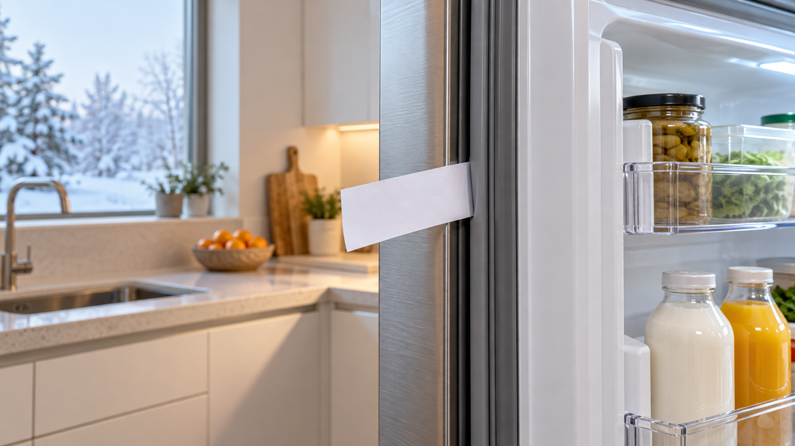

냉장고 문틈에 물방울이 생기거나 모터가 오래 돌고 문이 헐겁다면 고무패킹 오염·변형과 수평 상태를 확인하세요. 종이 한 장으로 밀착력을 비교하면 청소로 해결할지 교체 점검이 필요한지 판단하기 쉽습니다.
전원을 끄지 않아도 되는 짧은 청소라면 미지근한 물에 적신 부드러운 천으로 패킹 홈의 부스러기와 끈적임을 닦고 완전히 말립니다. 문 선반의 무거운 물건을 줄이고, 냉장고가 앞으로 기울었거나 문이 수납물에 걸리지 않는지 확인하세요.
| 상태 | 조치 |
|---|---|
| 오염 후 들뜸 | 청소·건조 후 재시험 |
| 일시적으로 접힘 | 설명서에 따른 복원 방법 확인 |
| 찢김·경화·자석 이탈 | 부품 교체 점검 |
| 문 자체가 처짐 | 힌지·수평 점검 요청 |
날카로운 도구로 홈을 긁거나, 강한 열을 가까이 대거나, 접착제로 임의 고정하지 마세요. 패킹 손상과 화재 위험을 키울 수 있습니다.
청소 후에도 전 둘레에서 틈이 보이거나 성에·결로·냉장 불량이 함께 생기면 모델명과 틈 위치 사진을 준비해 점검받으세요. 냉장고 문이 잘 닫히지 않을 때 점검법과 냉장고 결로 해결법도 참고하세요.
패킹 분리·교체 가능 여부는 모델별 제조사 사용설명서와 고객지원 안내를 따르세요.